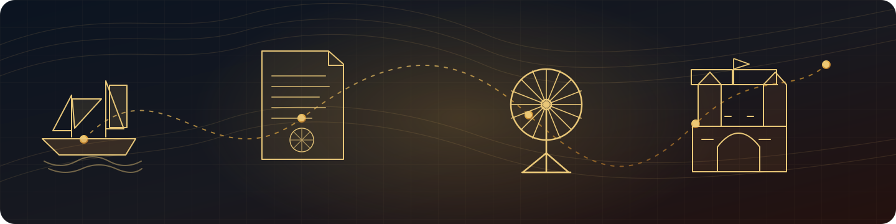

Go to the source
A curated research desk for official archival portals, digitised records, constitutional documents, parliamentary proceedings and institutional chronologies relevant to Indian history.

Research with evidence
A catalogue description can tell you what a file contains, but not necessarily what the whole record proves. Compare records, dates and different perspectives.
How to read an archive
Check the creator, date, audience, purpose and archival reference. Official records preserve valuable evidence, but each document reflects the institution and context in which it was produced.
Official records & collections
Filter by collection type or search the catalogue, topic, institution and date range.
From question to citation
A simple path for turning an interesting timeline event into a verifiable historical note.
Search an archive catalogue using names, places, offices and date ranges.
Browse collections ↑Read the document in its context and compare it with another record or account.
Browse profiles →Keep the institution, record title, reference number and access date with your notes.
Citation ready